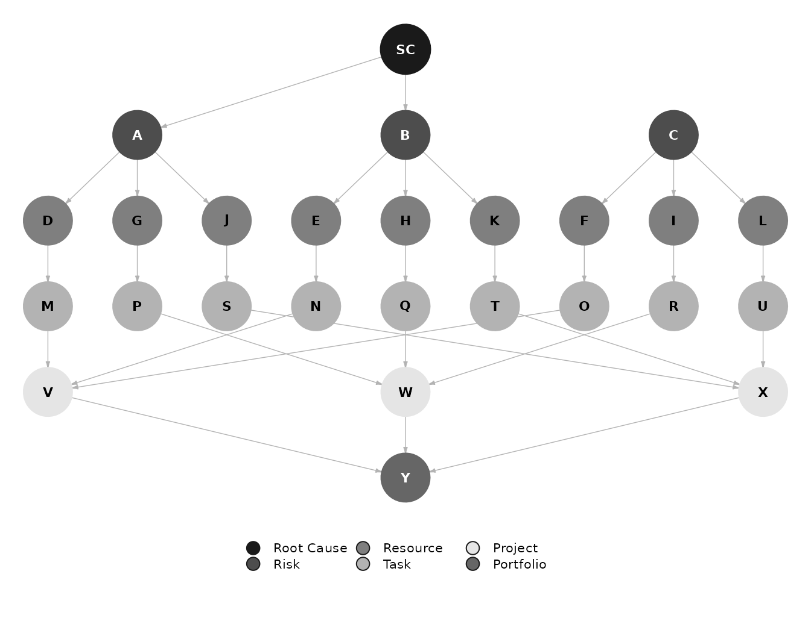
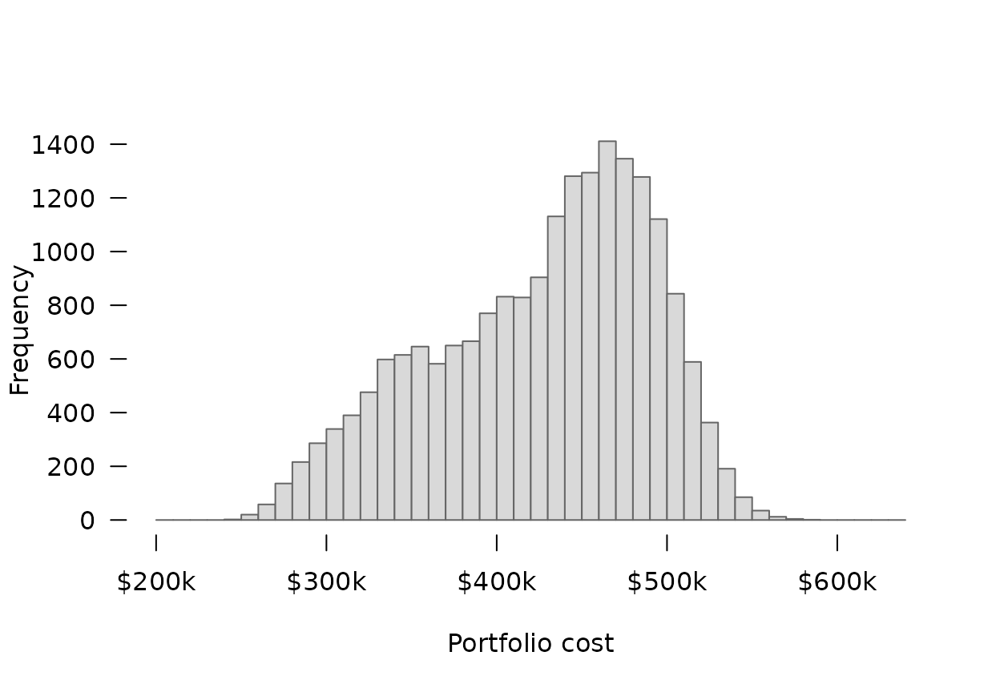
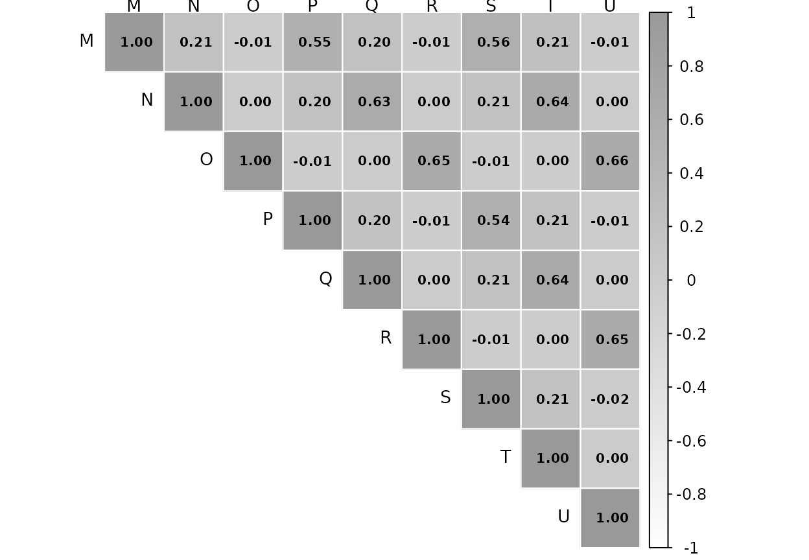
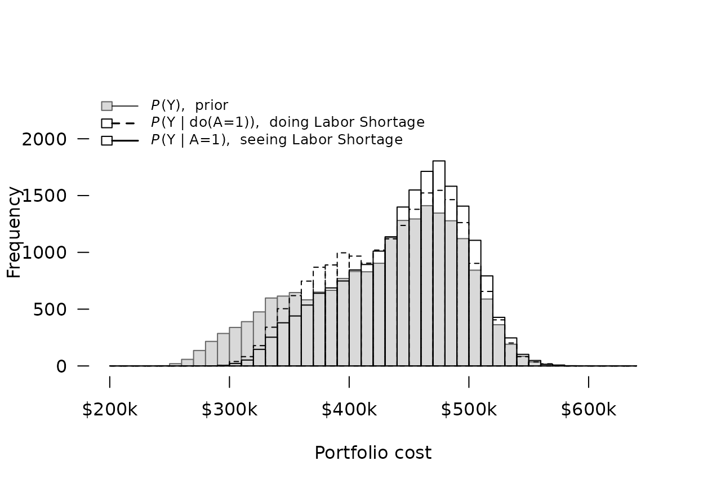
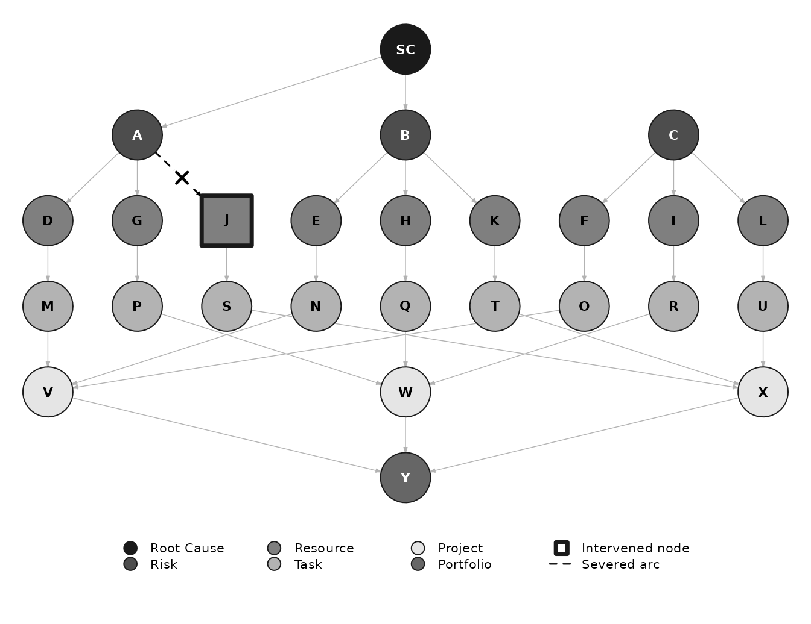
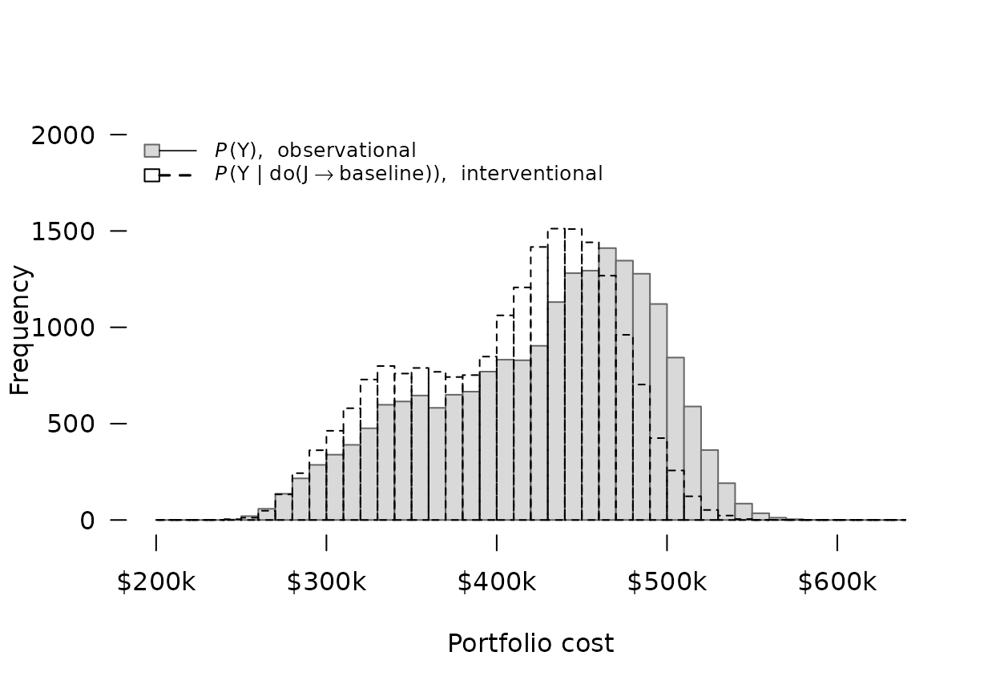
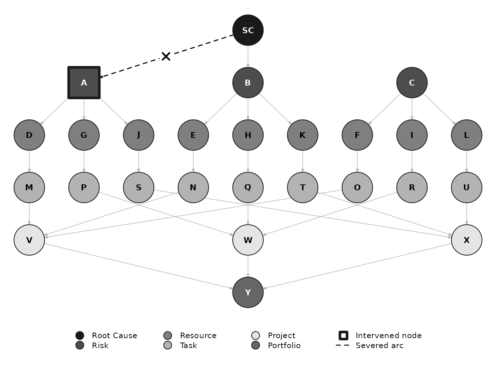
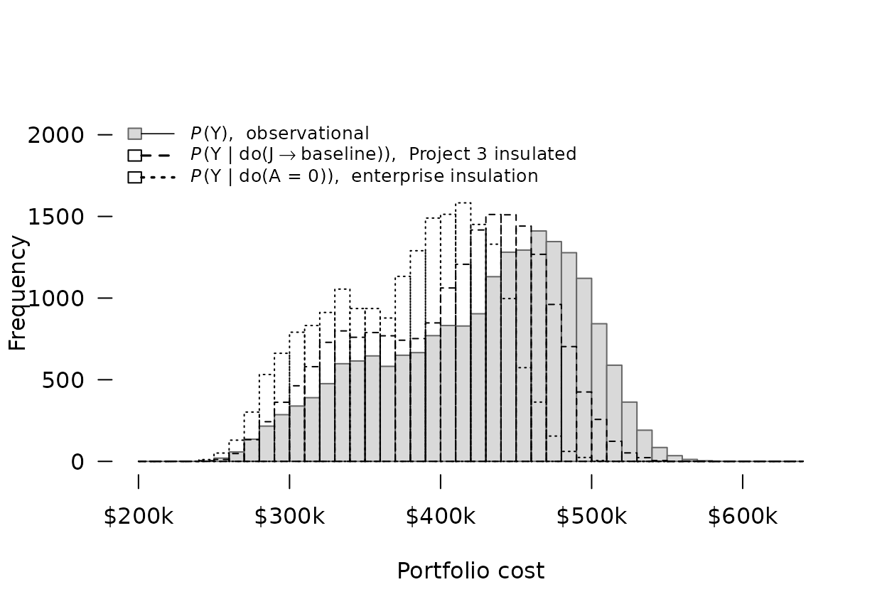
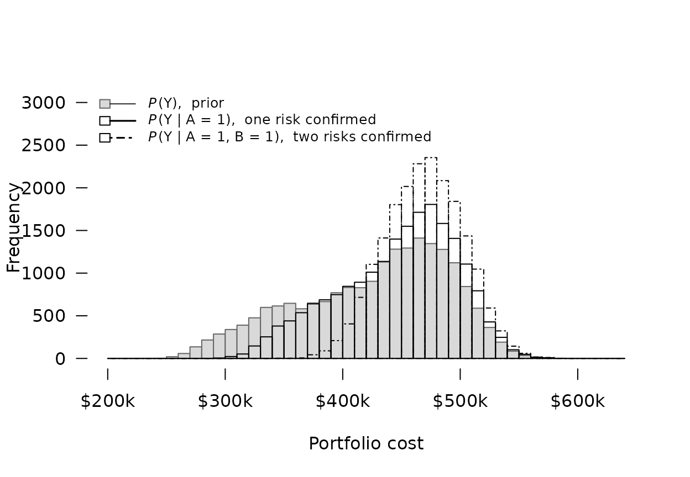
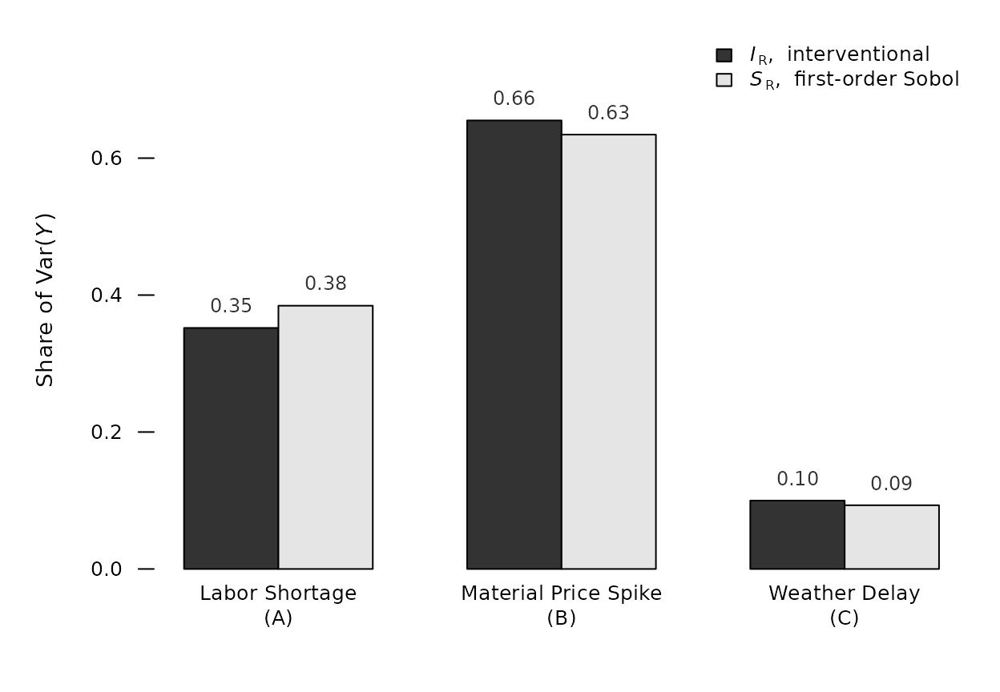

Introduction
This vignette demonstrates the probabilistic network workflow in the
PRA package applied to a project portfolio risk management
(PPRM) case study. The four core functions are:
-
prob_net()— build a causal network from node, edge, and distribution specifications; -
prob_net_sim()— draw Monte Carlo samples from the joint distribution (observational query); -
prob_net_learn()— condition on observed evidence via rejection sampling (seeing); -
prob_net_update()— apply graph surgery for causal interventions (doing).
The distinction between seeing and doing (Pearl 2009) is the central methodological point. Conditioning on a confirmed risk propagates evidence both upstream and downstream in the original graph; intervening on a risk severs its incoming edges and clamps its value, isolating the direct causal effect. The two operations give different portfolio cost distributions, and the gap between them has concrete managerial significance.
Case Study
Consider an enterprise running three projects at the same time: a Road Repair, a Park Construction, and a Building Renovation. Each project has three tasks driven by three resources: labor, materials, and equipment. These resources are shared at the enterprise level: the same labor pool, the same material suppliers, and the same equipment fleet serve all three projects.
This sharing creates direct portfolio-level risk. Three enterprise-wide risk events, a Labor Shortage, a Material Price Spike, and a Weather Delay, each propagate through the corresponding shared resource to impact all three projects simultaneously.
Critically, two of these risks, the Labor Shortage and the Material Price Spike, share a common upstream driver: a Supply Chain Disruption that simultaneously tightens the labor market and raises commodity prices. This upstream dependence means that observing a Labor Shortage is Bayesian evidence that a Supply Chain Disruption is underway, which in turn raises the probability of a Material Price Spike. It is precisely this structure, a root cause fanning out to multiple risks, which fan out to shared resources, that makes the distinction between seeing and doing empirically consequential at the portfolio level.
Tasks
Each project follows the same three-stage lifecycle: an initial site-preparation or demolition stage, a core execution stage specific to that project’s scope, and a final inspection stage. Tasks are aggregate nodes in the causal network, so a task’s cost is simply the deterministic sum of the resource(s) feeding into it; all of the uncertainty at the task level is therefore inherited from the resource distributions defined in the next section. The primary tasks for each project are as follows.
| ID | Label | Task | Project ID | Project |
|---|---|---|---|---|
| M | Task-1.1 | Site Preparation | V | Road Repair |
| N | Task-1.2 | Road Paving | V | Road Repair |
| O | Task-1.3 | Final Inspection | V | Road Repair |
| P | Task-2.1 | Site Preparation | W | Park Construction |
| Q | Task-2.2 | Planting and Landscaping | W | Park Construction |
| R | Task-2.3 | Final Inspection | W | Park Construction |
| S | Task-3.1 | Demolition | X | Building Renovation |
| T | Task-3.2 | Renovation and Build-Out | X | Building Renovation |
| U | Task-3.3 | Final Inspection | X | Building Renovation |
Resources
Each task is driven by one primary resource. Because all three projects draw from the same enterprise-wide labor pool, supplier network, and equipment fleet, the resource costs for like resources are correlated across projects.
| ID | Label | Resource | Task ID | Task | Project | Mean | SD |
|---|---|---|---|---|---|---|---|
| D | Resource-1.1 | Labor | M | Site Preparation | Road Repair | 30000 | 5000 |
| E | Resource-1.2 | Materials | N | Road Paving | Road Repair | 50000 | 8000 |
| F | Resource-1.3 | Equipment | O | Final Inspection | Road Repair | 20000 | 4000 |
| G | Resource-2.1 | Labor | P | Site Preparation | Park Construction | 25000 | 4000 |
| H | Resource-2.2 | Materials | Q | Planting and Landscaping | Park Construction | 30000 | 5000 |
| I | Resource-2.3 | Equipment | R | Final Inspection | Park Construction | 15000 | 3000 |
| J | Resource-3.1 | Labor | S | Demolition | Building Renovation | 40000 | 6000 |
| K | Resource-3.2 | Materials | T | Renovation and Build-Out | Building Renovation | 60000 | 10000 |
| L | Resource-3.3 | Equipment | U | Final Inspection | Building Renovation | 25000 | 4000 |
Risks
The network includes one root cause and three risk events. The root cause (SC) is a Supply Chain Disruption that drives both the Labor Shortage and the Material Price Spike. The Weather Delay is independent of SC. Each risk event is enterprise-wide and impacts the corresponding shared resource across all three projects.
| ID | Name | Event | P(occurs) | Children |
|---|---|---|---|---|
| SC | Root Cause | Supply Chain Disruption | 0.7 | A (Labor Shortage), B (Material Price Spike) |
| Risk ID | Risk | Parent | P(occurs | SC=1, SC=0) | P(occurs) | Resource impacted |
|---|---|---|---|---|---|
| A | Labor Shortage | SC | 0.95 / 0.40 | ≈ 0.79 | Labor (D, G, J) |
| B | Material Price Spike | SC | 0.85 / 0.25 | ≈ 0.67 | Materials (E, H, K) |
| C | Weather Delay | none | n/a | 0.60 | Equipment (F, I, L) |
Probabilistic Network
A probabilistic network is built from three components: nodes, links (edges), and probability distributions. The nodes represent variables, the edges represent cause-and-effect dependencies, and the distributions encode uncertainty at each node. The following constructs the network from the node, link, and distribution specifications laid out in the preceding section.
First, define the nodes. Each node carries three attributes. The first is a short identifier, unique across the network, that is used to wire up edges and probability distributions. The second is a human-readable label displayed in visualizations. The third is a tier assignment to one of six groups (Root Cause, Risk, Resource, Task, Project, Portfolio), which controls node coloring in the network diagram and reflects the six-level Resource-based View hierarchy. The 26 nodes span SC (root cause), A–C (risks), D–L (resources, three per project), M–U (tasks, three per project), V–X (projects), and Y (portfolio).
Next, define the edges. The structure follows the Resource-based View hierarchy: risks flow into shared resources, resources drive tasks, tasks roll up into projects, and projects aggregate into the portfolio.
Then define the probability distributions for each node, each keyed to the node’s identifier. Three distribution types are used. A discrete distribution specifies a finite support and the corresponding probabilities. It is used for binary event nodes (SC, A, B, C) where 1 = occurs and 0 = does not occur. A conditional distribution branches on the realized value of a named parent node: if the parent equals 1 the node draws from one distribution, and if 0 it draws from another. Resource nodes (D–L) use conditional distributions that switch between a higher-cost Normal when the relevant risk occurs and a baseline Normal when it does not. An aggregate distribution has no randomness of its own. It sums the realized values of a named set of upstream nodes. Task, project, and portfolio nodes are all aggregates, so the portfolio total Y is the deterministic sum of the three project costs, which are themselves sums of task costs.
Finally, build the network and visualize it as a layered directed graph. The network graph makes the shared-risk structure immediately visible: each of the three risk nodes fans out to the same resource type across all three projects. Note that the layered layout places each Resource-based View tier on its own row for readability. Causal ordering is determined by the topological sort of the DAG and encoded in the direction of the edges, not by left-right or top-bottom node placement.
graph <- prob_net(nodes, links, distributions = distributions)
The portfolio causal network. Nodes are arranged by Resource-based View tier, from the root cause at the top to the portfolio total at the bottom; each of the three risk nodes fans out to the same resource type in all three projects.
Inference
A causal network supports three qualitatively distinct queries: the observational distribution , the conditional distribution under seeing , and the interventional distribution under doing . The three are generally different, and conflating them is the source of the most common errors in causal reasoning. This section treats each in turn.
The observational query is computed by Monte Carlo simulation over the joint distribution implied by the DAG’s factorisation. Each sample draws a realization of every risk event, propagates costs through the conditional resource distributions, and sums to a portfolio total. samples are used for every query. Monte Carlo standard errors (MCSE), estimated by a nonparametric bootstrap over the simulated draws, are reported with the summary statistics in the Summary table at the end of this vignette, and every interventional scenario is simulated with common random numbers (the same random seed), so that differences between scenarios are not inflated by independent sampling noise.
set.seed(42)
sim_results <- prob_net_sim(graph, num_samples = n_mc)
cost_hist(sim_results$Y, sty_prior)
Observational distribution P(Y) of portfolio cost. Heavy tails reflect shared-risk amplification across all three projects.
The histogram reflects the combined uncertainty of all three shared risks. Because each risk affects all three projects, the tails of are heavier than they would be if risks were independent, a direct consequence of the shared-resource structure.
To quantify the cost of ignoring cross-project dependencies, compare the portfolio variance under the causal network against the sum of individual project variances. Under independence, , because projects would be uncorrelated. Under the causal network, shared risks introduce positive covariance terms:
The amplification factor is the ratio , estimated directly from the simulation:
where each is the sample variance computed from the 20,000-sample simulation output. A ratio of 1 would indicate independent projects. A ratio greater than 1 indicates that shared-risk covariance inflates the true portfolio variance above the sum of individual project variances.
This ratio also has a closed form, which is worth deriving because it reveals exactly which parameters drive the amplification. For a resource whose cost is conditional on a binary risk with , baseline mean and stress mean (with within-state variances and ), the law of total variance gives
and for two resources that share the same parent risk and are conditionally independent given it,
Two resources driven by different risks and are coupled only insofar as the risk indicators themselves are correlated:
Same-risk pairs in different projects (for example the labor nodes D, G, and J, all conditional on ) are coupled by the second rule, and the – pairs carry an additional cross-coupling through SC by the third. Assembling the full resource covariance matrix from these rules and comparing the total variance of with the sum of the within-project variances reproduces the simulated ratio:
In this simulation, the causal network gives a portfolio cost variance 2.24× larger than the naive independent-projects estimate, the factor by which a portfolio analyst ignoring shared resources would underestimate portfolio risk. The closed-form expression evaluates to 2.24×, confirming the Monte Carlo estimate up to sampling noise and showing analytically that the amplification is driven by the squared mean shifts relative to the within-state variances. For the special case of projects all exposed to the same binary risk with common intra-group correlation , the identity simplifies to , making precise the sense in which the underestimation error grows with portfolio size.
Algorithm 2 quantifies the cross-project coupling directly. The task-cost correlation matrix reveals which task pairs are correlated and by how much, with all correlation driven by the three shared enterprise risks.

Task-cost correlation matrix (Algorithm 2). Shading intensity encodes the correlation coefficient; numerical values are shown in each cell. Tasks sharing a common enterprise risk are strongly positively correlated; tasks driven by different risks are near zero.
Tasks driven by the same enterprise risk, namely Labor (M, P, S), Materials (N, Q, T), and Equipment (O, R, U), are strongly positively correlated across projects. Tasks driven by different risks are uncorrelated. The block structure of the matrix is a direct signature of the shared-risk mechanism: three correlated blocks along the diagonal, with near-zero entries everywhere else.
Seeing vs. Doing at the Risk Level
The second and third queries, seeing and doing, are both demonstrated here at the risk level, where the presence of SC makes the two operations genuinely diverge.
Seeing conditions on the observation in the original, unchanged DAG, and Bayes’ rule propagates the evidence upstream as well as downstream. Because SC is a parent of A, observing raises the posterior probability of SC from to , which in turn raises the probability of the Material Price Spike from its prior to . Seeing a Labor Shortage therefore shifts material cost distributions upward as a side-effect, a consequence that flows through the shared root cause SC, not through any direct A→B link.
Doing does not condition on data in the original graph. It performs graph surgery, severing the incoming edges of the intervened node and replacing its conditional distribution with a post-intervention distribution, here a point mass at 1. The interventional distribution is given by the truncated factorisation [@pearl2009], in which every factor corresponding to an intervened variable is deleted from the product:
Because SC→A is severed, SC remains at its prior , and B remains at . Material costs are unaffected. Only labor costs shift.
A common modeling shortcut is to fix directly in the original graph without severing SC→A. This shortcut does not produce the interventional distribution: because SC→A remains intact, sampling continues to propagate SC’s influence back through A, which yields the seeing distribution rather than . Graph surgery, the literal deletion of the arc, is what separates the two operations computationally.
Figure 4 shows the altered network under . The arc SC→A is severed (dashed, with a cut mark) and A, drawn as a square, is fixed at 1. Every other arc and distribution is unchanged, so B still depends on SC, but SC no longer carries any information about A.
# Seeing A = 1: Bayesian conditioning on the original graph
set.seed(42)
seeing_results <- prob_net_learn(graph,
observations = list(A = 1),
num_samples = n_mc
)
# Doing do(A = 1): graph surgery — sever SC → A, fix A = 1
do_A1_graph <- prob_net_update(graph,
remove_links = data.frame(source = "SC", target = "A",
stringsAsFactors = FALSE),
update_distributions = list(
A = list(type = "discrete", values = c(1, 0), probs = c(1, 0))
)
)
set.seed(42)
do_A1_results <- prob_net_sim(do_A1_graph, num_samples = n_mc)
draw_network(removed = surgery_edges(graph, do_A1_graph), fixed = "A")
The altered network under do(A=1). The arc SC→A is severed (dashed, marked) and the intervened node A (square) is fixed at 1; all other arcs are unchanged.
Figure 5 compares the resulting portfolio cost distributions.

Portfolio cost distributions under the prior (solid grey), doing do(A=1) (dashed outline), and seeing A=1 (solid outline). The seeing distribution lies furthest right because observing a Labor Shortage also raises the posterior probability of a Supply Chain Disruption and hence a Material Price Spike.
The three distributions separate in the expected direction. The doing distribution (dashed outline) lies between the prior (solid grey) and the seeing distribution (solid outline): it captures only the direct labor cost increase. The seeing distribution shifts further right because it also picks up the indirect material cost increase propagated through SC. The gap between the interventional and observational posteriors is the quantitative signature of the shared root cause, and the practical reason the distinction matters to portfolio managers. An analyst who treats a confirmed Labor Shortage as equivalent to an intervention on labor would underestimate portfolio cost exposure by ignoring the correlated material price signal it carries.
Computationally, seeing is implemented by rejection sampling: draws are generated from the full joint distribution of the unaltered network, and only those consistent with the observation are retained. The evidence therefore propagates upstream to SC as well as downstream to the resources. As a check, the simulated posterior (MCSE 0.003) agrees with the analytic value of 0.758.
Project-Scoped Resource Diversification
The same graph surgery applies to resource nodes, not only to risks. Suppose the enterprise secures a dedicated labor crew for the Building Renovation (Project 3) that is insulated from the enterprise-wide labor shortage. This is an intervention on Labor-3, , implemented as graph surgery: the arc is deleted, and is assigned its baseline unconditional distribution. Sampling from the mutilated graph yields draws from .
Figure 6 shows the altered network. The arc A→J is severed and J, drawn as a square, is assigned its baseline distribution, while A continues to drive D and G.
# Graph surgery: sever A → J, assign J its baseline distribution
do_graph <- prob_net_update(graph,
remove_links = data.frame(source = "A", target = "J",
stringsAsFactors = FALSE),
update_distributions = list(J = list(type = "normal", mean = 40000, sd = 6000))
)
set.seed(42)
do_results <- prob_net_sim(do_graph, num_samples = n_mc)
draw_network(removed = surgery_edges(graph, do_graph), fixed = "J")
The altered network under do(J→baseline). The arc A→J is severed (dashed, marked) and the intervened node J (square) takes its baseline distribution; A still drives D and G.
Figure 7 compares the resulting portfolio cost distributions.

Observational P(Y) (solid grey) versus the interventional distribution P(Y | do(J→baseline)) (dashed outline). Securing a dedicated crew for Project 3 shifts the distribution left by removing labor-shortage exposure from that project alone.
The interventional distribution has a measurably lower mean and a thinner upper tail than the observational distribution. This is the operational pay-off of the Resource-based View seen through a causal lens: by severing a single arc in the causal graph, portfolio tail exposure is reduced without changing anything about the labor markets for Projects 1 or 2.
Enterprise-Wide Risk Insulation
The preceding intervention targeted a single project’s resource. A second and more powerful lever insulates the entire portfolio from a risk rather than insulating one project from it. This corresponds to .
A firm cannot unilaterally prevent a labor-market shortage, which is an external condition outside any single firm’s control. What models is full insulation from that condition: a hedge, fixed-price contract, or risk-transfer arrangement that guarantees zero labor-shortage cost impact regardless of what the labor market does. The graph surgery severs SC→A, the only incoming arc to A, and clamps A = 0. Because A is now a fixed root node equal to 0, every labor node draws from its baseline distribution, and labor-shortage exposure is neutralized across all three projects simultaneously. This differs fundamentally from the project-scoped intervention above: there, A remained a live risk in the portfolio and only Project 3’s labor was insulated. Here, the labor risk is transferred away enterprise-wide.
Figure 8 shows the altered network under . The surgery has the same shape as in Figure 4, severing SC→A, but A is now fixed at 0, so all three labor nodes (D, G, J) draw from their baseline distribution.

The altered network under do(A=0). The arc SC→A is severed (dashed, marked) and the intervened node A (square) is fixed at 0, removing labor-shortage exposure from all three projects.
Figure 9 compares the observational distribution with both interventions.

Project-scoped insulation (dashed outline, do(J→baseline)) versus enterprise-wide labor insulation (dotted outline, do(A=0)). Insulating the whole portfolio from the Labor Shortage produces a larger leftward shift than insulating a single project.
The gap between the two interventional distributions quantifies the additional portfolio benefit of an enterprise-wide risk-transfer strategy over a project-level resource-diversification one.
Seeing Two Risks at Once
Suppose both the Labor Shortage and the Material Price Spike are confirmed, and simultaneously.

Portfolio cost distributions under the prior (solid grey), seeing A=1 alone (solid outline), and seeing both A=1 and B=1 simultaneously (dot-dash outline). Confirming two shared risks compounds the rightward shift and narrows the distribution further.
Confirming two shared risks produces a larger rightward shift than confirming one, and the distribution narrows further because the compound observation resolves the uncertainty in two risk channels at once. The incremental shift from adding is, however, smaller than one might expect, and the reason is instructive. Having already observed , the posterior probability of the Material Price Spike is , so additionally confirming moves that probability only from to . The shared root cause SC has already propagated most of ’s update through . This is the informational redundancy that shared root causes induce between risk signals: when two risks descend from a common cause, the second observation carries less independent news than its marginal probability would suggest. The practical lesson is the converse of naive intuition: monitoring two risks that share a root cause yields diminishing returns, whereas monitoring risks with independent drivers (for example and the weather-driven ) provides more genuinely new information per signal.
Risk Importance Ranking
Portfolio managers cannot mitigate every risk simultaneously. A natural question is: which shared risk contributes most to portfolio cost variance? The causal network answers this directly by running three separate enterprise-insulation interventions, , , and , and measuring the variance reduction each produces.
Two importance measures are reported. The first is interventional: , the share of portfolio cost variance removed by insulating the portfolio against risk . It is a variance analogue of the risk reduction worth used in probabilistic safety assessment, which measures the decrease in risk when a basic event is set to never occur [@vanderborst2001; @kuo2012]. The second is the first-order variance-based (Sobol) index [@sobol1993; @borgonovo2016], which probabilistic graphical models can compute directly [@ballester2022]. Both measures are evaluated in closed form from the covariance rules above.

Risk importance: the share of portfolio cost variance removed by insulating against each enterprise risk, I_R (dark), and the first-order Sobol index, S_R (light). Both measures rank the Material Price Spike first and the Weather Delay last.
Both measures rank the Material Price Spike first ( = 0.66, = 0.63), the Labor Shortage second ( = 0.35, = 0.38), and the Weather Delay last ( = 0.10, = 0.09). Neither set of shares sums to one, because A and B are dependent through SC and the variance they jointly induce is counted under each. The Monte Carlo estimates of from the three insulation runs agree with the closed-form values to within 0.005. For mitigation planning, is the decision-relevant measure, because it is the reduction a manager would actually obtain by insulating the portfolio against that risk.
Sensitivity to Input Assumptions
Every input in the case study is illustrative, so the conclusions should not depend on the particular values chosen. Three groups of inputs are varied jointly: the prior probability of the root cause, ; the strength of the coupling between SC and the two risks it drives, from weak ( vs. , vs. ) through the base case to strong ( vs. , vs. ); and the size of every stress-state mean shift , scaled by , , or . All 27 combinations are evaluated in closed form with the covariance rules of the Inference section. The results are shown in the table below.
| Coupling to SC | P(SC = 1) | Var ratio (0.5) | Var ratio (1) | Var ratio (1.5) | Seeing-doing gap ($000) | Redundancy | Importance ranking |
|---|---|---|---|---|---|---|---|
| Weak | 0.3 | 1.61 | 2.22 | 2.50 | 1.1 | 0.03 | B > A > C |
| Weak | 0.5 | 1.59 | 2.20 | 2.48 | 1.3 | 0.04 | B > A > C |
| Weak | 0.7 | 1.55 | 2.16 | 2.45 | 1.0 | 0.04 | B > A > C |
| Base | 0.3 | 1.75 | 2.35 | 2.58 | 11.0 | 0.22 | B > A > C |
| Base | 0.5 | 1.72 | 2.32 | 2.56 | 11.0 | 0.27 | B > A > C |
| Base | 0.7 | 1.63 | 2.24 | 2.51 | 7.9 | 0.27 | B > A > C |
| Strong | 0.3 | 1.88 | 2.44 | 2.64 | 41.3 | 0.67 | B > A > C |
| Strong | 0.5 | 1.88 | 2.44 | 2.64 | 33.1 | 0.73 | B > A > C |
| Strong | 0.7 | 1.76 | 2.35 | 2.58 | 20.9 | 0.73 | B > A > C |
First, ignoring shared resources understates portfolio cost variance in every combination, by a factor of between 1.55 and 2.64. The factor grows with the size of the mean shifts and is nearly insensitive to the root-cause probability. Second, the importance ranking (Material Price Spike, then Labor Shortage, then Weather Delay) holds in all 27 combinations, under both measures. Third, the seeing-doing gap and the informational redundancy are driven almost entirely by the strength of the coupling to the common cause. With weak coupling the gap falls to about $1.3k and the redundancy to 0.04. With strong coupling they rise to as much as $41.3k and 0.73. These two results therefore hold in proportion to how strongly the risks share a cause, which is what the causal account predicts: with no common cause, seeing and doing coincide.
A Monte Carlo run at the most extreme combination (, strong coupling, mean shifts scaled by 1.5) reproduces the closed-form variance ratio: 2.64 from simulation against 2.64 in closed form. A final check concerns the choice of the Normal family for resource costs. Replacing every resource distribution with a lognormal of the same mean and standard deviation, which gives each resource a right-skewed cost, changes the 95th-percentile reduction from enterprise-wide labor insulation only from $61.3k to $61.7k. Within each risk state the portfolio total sums nine moderately dispersed resources, so the skew of the individual costs largely disappears, and the tail comparisons reported here are not sensitive to the distributional family.
Summary
The following table collects key statistics from every scenario demonstrated above, converting each histogram into actionable numbers.
| Mean ($000) | SD ($000) | 95th Pct ($000) | |
|---|---|---|---|
| Observational P(Y) | 426.4 (0.5) | 64.0 (0.3) | 513.9 (0.4) |
| Seeing P(Y | A = 1) | 447.1 (0.4) | 50.2 (0.2) | 517.8 (0.5) |
| Seeing P(Y | A = 1, B = 1) | 468.9 (0.2) | 33.1 (0.2) | 522.2 (0.4) |
| Doing do(J → baseline) [Project 3 insulated] | 406.7 (0.4) | 57.8 (0.2) | 487.9 (0.5) |
| Doing do(A = 0) [Enterprise insulation] | 378.8 (0.4) | 51.5 (0.2) | 452.6 (0.5) |
The two seeing rows raise the mean (by about $21k, then $42k, above the observational baseline) while shrinking the standard deviation, so the 95th percentile moves far less (a change of +4k, then +8k): confirmed bad news changes what a manager should expect more than the worst case. The two doing rows move the opposite way. Insulating Project 3 lowers the mean by about $20k and the 95th percentile by about $26k, and enterprise-wide labor insulation lowers them by about $48k and $61k. Comparing the mean against the 95th percentile in each row separates a shift in expected cost from a change in tail exposure, which is the distinction the managerial levers in the next section build on.